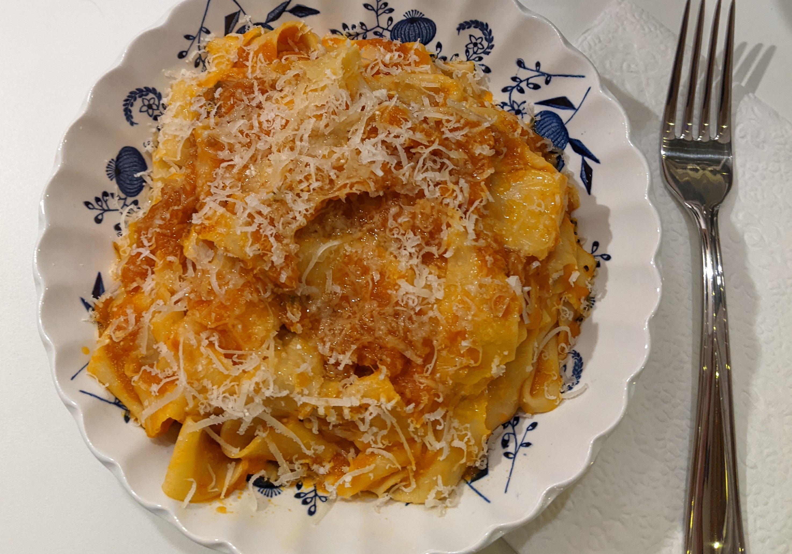

Roasted Pepper Sauce

Description
This is a twist on the classic red sauce recipe, adapted from
Marcella Hazan's Tomato Sauce with Onion and Butter. If you have not yet
tried Marcella's tomato sauce recipe, I highly recommend it, and this is the only tomato
sauce I will make anymore.
Ingredients
- 6 bell peppers (a mix of red, orange, and yellow)
- 8 cloves of garlic
- two 28 oz cans of Cento peeled tomatoes
- 5 Tbsp unsalted butter
- 2 Tbsp sugar
- salt and pepper to taste
- fresh basil
Steps
- Preheat the oven to 500℉.
- Cut peppers in half and discard core and seeds and spread out on
baking sheet.
- Roast on the middle rack of the oven until they start to brown on top, about 10
minutes, then flip and roast another 10-15 minutes. Set aside to cool.
- Roast garlic until golden brown and fragrant, about 10 minutes.
- When peppers are cool enough to handle, peel the skins off and discard.
- Place peppers, garlic, and canned tomatoes with their sauce in a
blender and blend until smooth.
- Move the sauce to a heavy-bottomed pan and add butter, sugar
, salt and pepper, and torn fresh basil.
- Simmer to thicken.
- Pour over your favorite pasta, mix, and enjoy!